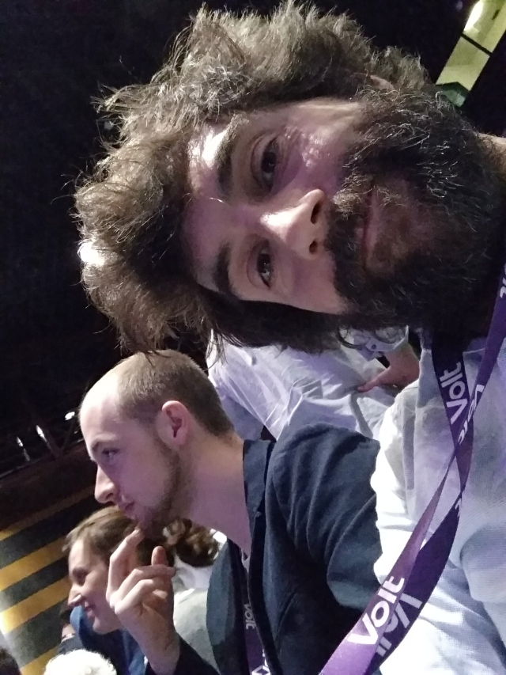
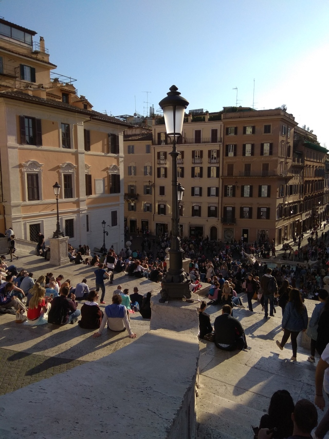
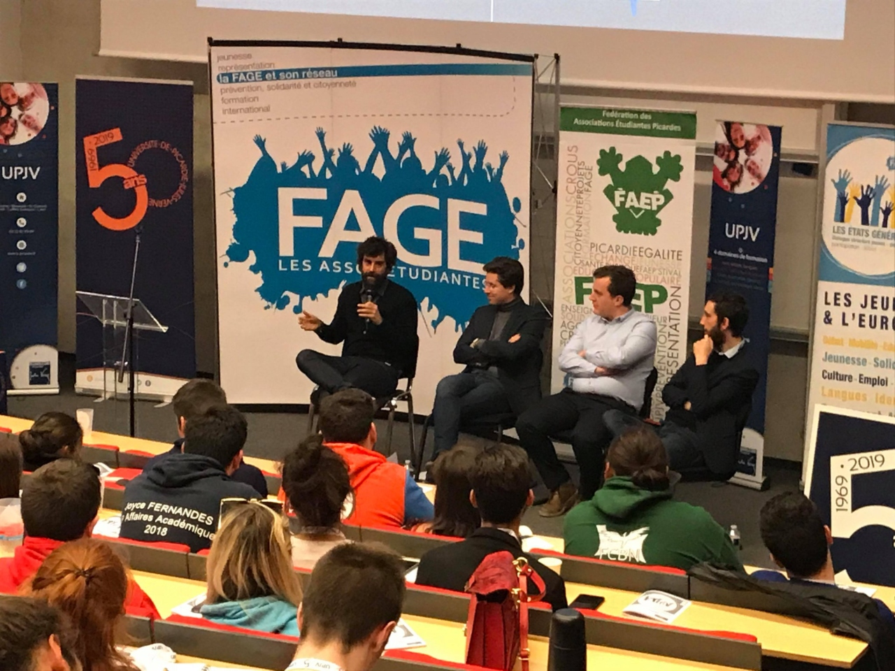

Bonjour à tous et à toutes,
nous changeons un peu le format d'hebdo pour le partager ici et aussi sur Meetup et Facebook. Pour les nouveaux: le Lille hebdo est notre fiche d'info interne pour la semaine à l'avenir y compris les événements intéressants, nos projets et l'info sur les activités de Volt et Volt France en général.
La week-end dernière était le congrès Européenne à Rome. Le grand sujet entre les lignes était d'être patient, d'apprendre à participer aux élections, de participer si possible et après, de commencer à travailler dans les élections suivantes - en France au niveau municipale. Nous avons lancé un réseaux des villes pour s'appuyer mutuellement - nous sommes dans un groupe avec Sofia, Catania, Mainz et Bonn. Bref: temps très bien passé.
 Louis et moi étions intervenants à Amien ce vendredi au Grand Oral de la FAGE (Fédération des associations générales étudiantes). Ils étaient six intervenants (Volt, Place Publique, Les Verts, Generation.s, En Marche et ?) pour se présenter et parler des droits sociaux à l'échelle Européene et l'engagement de (jeunes) citoyens. À en juger par Twitter, nous avons obtenu de bons feedback. Première fois pour moi aussi, de parler dans une grande audience.
Nous étions confrontés par un cadre de ville de Lille cette semaine en distribuant de nos flyers devant la gare. Il faut avoir un permis pour tracter, beaucoup d'effort et temps perdu pour 1h de tractage. Donc nous ferons un plan de campagne à Lille avec les dates exacte jusqu'à le 26 Mai et préparer les formulaires.
Le clockwork coworking nous a offert l'auditorium chaque mercredi 18:00-21:00. Donc nous commencerons avec les "petites débats" le mercredi prochaine. Nous voulons donner la parole aux citoyens pour parler qu'est-ce qu'il faut changer pour répondre aux besoins et aux urgences.
Le mercredi, 3 avril, nous sommes invités par l'AEGEE comment créer un nouveau parti politique et comment répondre à l'urgence climatique. C'est en même temps comme le début de la petite débat donc je pense nous y remettre une semaine plus tard
Deux initiatives importantes pour nous à contribuer. Si vous voulez participer au nom du Volt France, parler avec moi (Sven)
Des questions, des commentaires, n'hésitez pas.
Bonne semaine à tous,
Sven